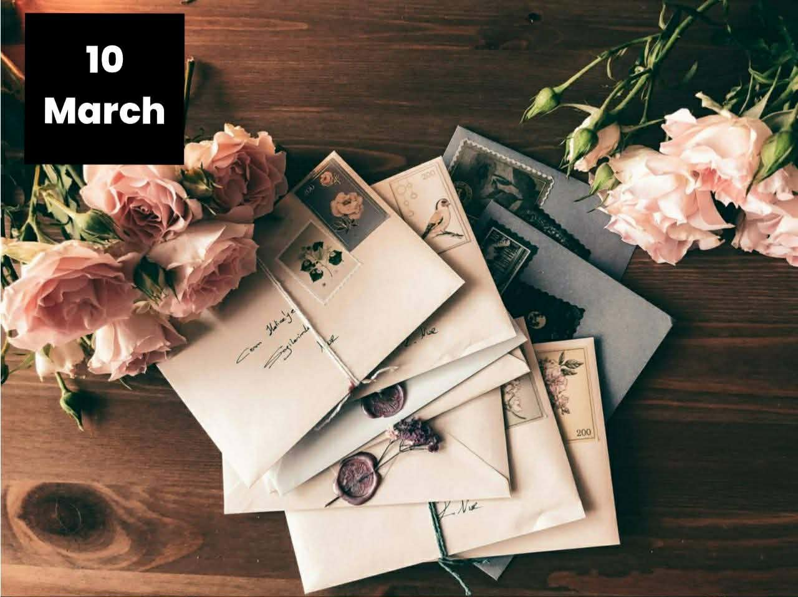

Bliss & Bloom Blog

Choosing the Right Words for Your Bouquet
Posted by Admin · 0 Comments · 5,290 Reads
Choosing the right words seems daunting at times. If you are finding it difficult to compose
a message which will be included with your bouquet, you may find the following tips and
guide helpful. We suggest using the KISS Method.
Choosing the right words seems daunting at times. If you are finding it difficult to compose a
message which will be included with your bouquet, you may find the following tips and guide
helpful. We suggest using the KISS Method.
Keep it Interesting, Short and Sweet (KISS):
- For a romantic gesture such as an anniversary, you might want to spice things up with
interesting yet sweet messages.
- You might also want to include some details on your note such as where you met or the color
of her eyes. Just make sure the details are accurate.
Below are some examples to help you figure out your composition:
- Example No. 1: "Happy Anniversary Honey! I am elated to see you as
beautiful since I first saw you 5 years ago. Happy Anniversary My Love." Including
compliments together with certain details shows that you are cherishing every moment with
your loved ones and appreciate even the smallest details in your relationship.
- Example No. 2: "On my way to lunch at 'La Cocina' I saw you and it reminds
me of our first date. I can't wait to meet again." Sometimes specific memories work well.
- Example No. 3: "Cheers to another wonderful year!" Sometimes simple and
endearing works well. Short and Sweet phrases such as this example will make the person
remember that they hold a very special place in your life.
Personalize Your Message: Make your message meaningful and sincere, so tweak it
as you see fit. You may also want to add a little humor or quotes that you think your loved one
will appreciate. Customize your message depending on your personality and the personality of the
recipient - it will show how much you know the person.
We hope this simple guide would help you come up with a note that would express how much you feel
about your loved one. Chocolates also do wonders, so put some on your order!
4. Flower Delivery Guide in Makati City
So, you want to send flowers to Makati City, and you want to know a couple of simple facts that
you might want to consider before doing so. We came up with this simple article that would help
guide you about the Makati landscape and other things to consider for your flower delivery.
- Location / Address: For office delivery, please note the business time in
which the recipient will be in the office to accept the delivery or for someone to accept it
on her/his behalf. For residential delivery, ensure accurate and updated address and
availability of the recipient on the delivery location.
- Strict Establishments: Some offices, hotels and condominiums in Makati are
strict. Please prepare and provide all the necessary information about the recipient such as
floor, department, position, room number, and other pertinent delivery details. Check if the
establishment will allow the flowers to be delivered in the room or will it just be left in
the lobby for pickup.
- Date: Please ensure that the recipient will be able to receive the flowers
on the stated delivery date. Take note of any regular holidays or special non-working
holidays especially for office delivery. Valentine's Day is a peak season, so we strongly
suggest to order as early as possible.
- Time: Place your order as early as possible to ensure proper delivery.
Regular delivery time is 8 am to 6 pm. Odd delivery hours such as graveyard shift (9 pm to 6
am) is on per approval and consideration basis. We suggest placing your order 2 days in
advance prior to delivery date for odd hour delivery.
- Flowers: Most flowers are available even imported ones if you place your
order 2 days prior to delivery. Common flowers available on a daily basis are roses,
daisies, lilies, carnation and tulips. Sunflowers as well are available on most occasions
although supply is less during off season. Common rose colors available are red, pink, white
and blue (spray).
- Gifts / Add-ons: Stuffed Bear (light brown / cream), Ferrero Chocolates,
wines are always available. We advise at least 1 day in advance for cake orders, custom
pillow and mug for mom.
- Delivery Information: Accurate delivery and recipient information is very
helpful for swift and successful delivery. Ensure that the delivery address, contact details
and any helpful pertinent information are accurate and up to date. Check the availability of
the recipient on the date and location of delivery.
If you are planning to send flowers and gifts to Makati, you might want to consider www.blissandbloomdelivery.com for your orders. If you still have further
questions and concerns regarding Makati flower delivery, you may drop us a call or email us. Our
staff are here to accommodate all your concerns and inquiries.
5. Choosing Vases or Containers for Your Flowers
You just received a bouquet of flowers from Bliss and Bloom Delivery, it is a good idea to
rehydrate the flowers so that it will last longer. The best way to hydrate it is to place it in
a water container. Choosing a container for your flowers is quite simple. Any container that can
properly hold water will do: tall mug, pitcher, vase, tumbler will do. If you prefer to use
wooden boxes or wicker boxes which does not hold water, we suggest you conceal a plastic
container inside the box so you can water the flowers regularly.
- Shape and Size of Vase: Some vases are built to be a little heavy in the
bottom to provide additional support for taller flower arrangements. Tall vases will work
for longer stem flowers such as tulips and Ecuadorian roses, just make sure the vase can
support the height of the arrangement. A medium height vase or a vase with a wider opening
will work well if the bouquet you received has shorter stems or bulkier, these may be a
bunch of daisies or carnations. Some urns would also work because it is wider on the top
part.
- Matching Your Vases: It is good to match your vase depending on the
situation, mood or occasion. For casual occasions a mason jar, glass pitchers, ceramic mugs
and ceramic pots would do. While for a more formal event you may want to use silver-plated
or gold-plated containers. Crystal vases would also do the trick if you have one.
- Be Creative: If you have tall bottles you can use them for single stem
flowers or as much as long as it fits freely on its narrow neck. Some uses tea sets whether
silver or ceramic would look nice with some colorful flowers. Some uses old pitchers,
ceramic syrup containers, flask, laboratory glass containers, empty liquor bottles, frosted
mugs, mason jars, and milk bottles to name a few. Neutral container colors such as white,
black, grey and glass are easy to use because it matches any flower color. If you have a
colored container that does not match your flowers, then tie a ribbon with the same color
with your flower and it would look better.
We hope that this guide would help you find the perfect container for your flowers with what you
already have at home. What is important is that your flowers are placed on a clean container and
that you replace the water regularly (once a day would be good), so that you can enjoy your
flowers longer. Your well-arranged flower will surely brighten any room.
We also have a couple of arrangements on our website www.blissandbloomdelivery.com that already includes a vase, if you do
not want to trouble yourself or your recipient on where to place the flowers.